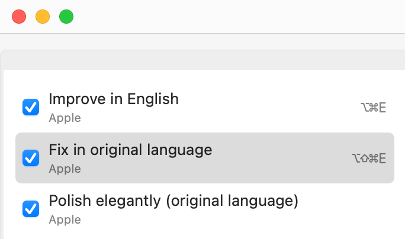

Your draft, fixed in place.
Write in any app and press one shortcut. HotkeyAI rewrites the text in the field you are typing in: clear, natural English, or your own language without the mistakes.
- Free
- No HotkeyAI account
- Signed and notarized by Apple
- On the Microsoft Store
Hi team, we have two ideas for the launch and I think they are worth discussing tomorrow
What HotkeyAI changedhiHi team, we hashave two ideas for the launch and i thinksI think they isare worth discussing tomorowtomorrow
Five ready-made actions
They work in any text field. HotkeyAI takes the text, sends it to the AI you chose, and puts the result back in the same place. Your clipboard is restored afterwards. The actions are only examples: change their prompts and shortcuts, delete them, or add your own.
я не обещал закончить к пятнице
I did not promise to finish by Friday.
mañana te envio el informe si todo sale bien
Mañana te envío el informe si todo sale bien.
Your choice of AI
Pick one for everything, or a different one for each action. Your text goes only to the AI you picked.
| AI | Where your text goes | Cost | You need |
|---|---|---|---|
| Apple IntelligenceDefault on Mac | Nowhere. It runs on your Mac and works offline. | Free | A Mac with Apple silicon and macOS 26 or later. Best for shorter texts. |
| Sign in with ChatGPTDefault on Windows | To OpenAI, under your ChatGPT account. No API key. | Included in ChatGPT Plus or Pro | A ChatGPT Plus or Pro plan. Mac or Windows. |
| Your own API keyOpenAI, Claude, Gemini | To OpenAI, Anthropic or Google, under your key. | Billed by the provider for each request | A key from that provider. Mac or Windows. |
Keys and sign-in tokens stay on your computer: in the Keychain on a Mac, encrypted for your account on Windows. Apple Intelligence isn't available on Windows.
Make your own actions
An action is a name, a shortcut and a prompt. The built-in ones are just examples: rewrite them, delete them, or add one for anything you do to text every day.
- Make it shorter
- Make it polite
- Turn this into bullet points
- Make it more formal
- Choose what it works on: the whole field, the selected text, or the selection when there is one.
- Choose its AI and model, separately from your other actions.
- Let it search the web and think longer, with ChatGPT, OpenAI, Claude or Gemini.
- Try the prompt first on sample text in Settings, then use it anywhere.

Install
HotkeyAI is free and needs no account with us. The store for your computer installs it and keeps it up to date.
Mac
macOS 14 Sonoma or later, Apple silicon and Intel.
The Mac App Store installs HotkeyAI and keeps it up to date.
Apple is reviewing HotkeyAI for the Mac App Store. Until it arrives, download the same app, signed and notarized by Apple:
Windows
Windows 10 (version 2004 or later) and Windows 11, Intel, AMD and Arm.
The Microsoft Store installs HotkeyAI and keeps it up to date.
Other ways to install
Use these when the store isn't available in your country or region, or when a work or school computer blocks it.
- Mac
- HotkeyAI-1.0.dmg (1.7 MB): open it and drag HotkeyAI to Applications. It is signed with Developer ID and notarized by Apple. It needs macOS 14 or later, the same as the Mac App Store version, so it doesn't help on an older Mac. It doesn't update itself: get new versions from GitHub Releases.
- Windows
- There is no direct download yet; HotkeyAI for Windows comes from the Microsoft Store. If your work computer blocks the Store, ask your IT department to allow HotkeyAI (Store ID 9P6DQ3CCTWFX).
Apple Intelligence needs a Mac with Apple silicon and macOS 26 or later. Signing in with ChatGPT needs a ChatGPT Plus or Pro plan. OpenAI, Anthropic and Google bill API keys directly.
Set up in a minute
You do this once. HotkeyAI can then open by itself when you log in.
On a Mac
- Install. Get HotkeyAI from the Mac App StoreOpen the disk image and drag HotkeyAI to Applications, then open it. The keycap icon appears in the menu bar.
- Allow keyboard access. HotkeyAI opens System Settings → Privacy & Security → Accessibility. Turn on HotkeyAI.
- Try it. Type something in Notes or Mail and press ⌥⌘E.
- No Apple Intelligence? Sign in with ChatGPT or paste an API key in HotkeyAI → Settings → AI Providers.
Why the Mac asks for Accessibility access
macOS lets an app press keys for you only with your permission. HotkeyAI uses it to press ⌘A ⌘C ⌘V in the field you are typing in, and only when you press one of your shortcuts. It does not read your screen or record your typing.
On Windows
- Install. Get HotkeyAI from the Microsoft Store and open it. The keycap icon appears in the notification area of the taskbar (it may be under ^).
- Connect an AI. Sign in with your ChatGPT Plus or Pro account, or add an OpenAI, Claude or Gemini API key.
- Try it. Type in any text field and press WinAltE.
Windows needs no extra permission.
Privacy
Your text goes from your computer to the AI you chose, and nowhere else. HotkeyAI has no servers.
Nothing collected
No account with us, no analytics, no tracking and no ads. HotkeyAI keeps no copy of your text or the results.
Keys stay with you
API keys and sign-in tokens live in your Mac’s Keychain, or encrypted for your Windows account.
Open source
Anyone can read HotkeyAI’s code on GitHub. Read the privacy policy.
Questions
Something else? See open questions or ask a new one on GitHub.
- Where is HotkeyAI after I open it?
- It has no window. Look for the keycap icon in the menu bar on a Mac, or in the notification area of the taskbar on Windows. Click it for your actions and Settings.
- Something doesn’t work
- Open an issue on GitHub. Say which computer you use and what the banner at the top of the screen (above the taskbar on Windows) said.
- The switch is on, but HotkeyAI still asks for access
- In Accessibility settings, select HotkeyAI and remove it with −. Then choose Allow keyboard access… in the HotkeyAI menu and turn it on again.
- Nothing changes in some Windows apps
- Windows doesn’t let other apps type into apps that run as administrator, so HotkeyAI can’t change text there.
Fix your next draft with one shortcut.
Free for Mac and Windows. Other ways to install
Support HotkeyAI
HotkeyAI is free. If it saves you time, you can leave a tip on Ko-fi. It pays for the Apple developer membership and for time to keep HotkeyAI updated.